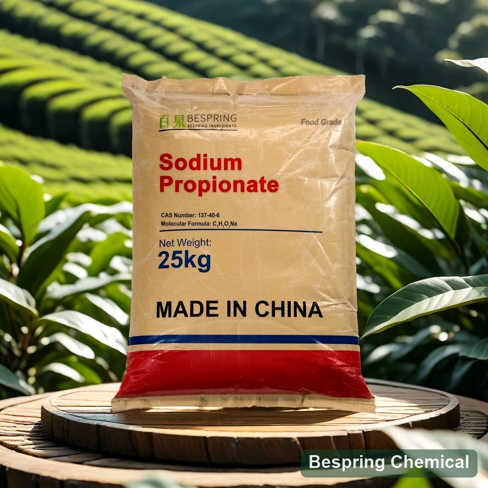
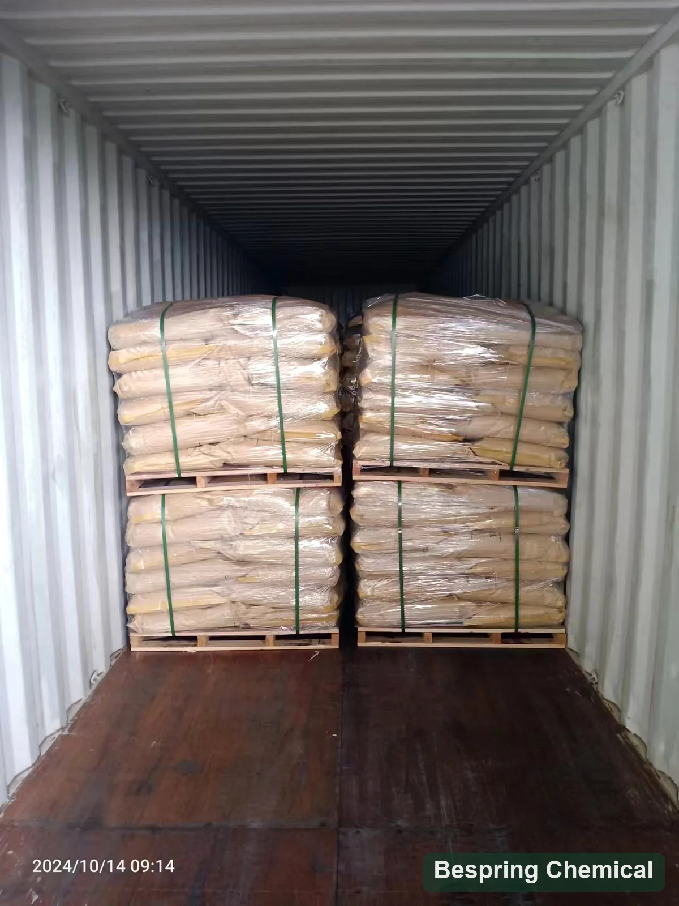

ขนมปังและม้วน
การ ควบคุม รา, รสชาติ, และ การ ใช้ ชีวิต แบบ เรียบ ง่าย ใน การ ปรุง อาหาร จริง ๆ.
ส่วนประกอบระดับอาหาร as prestervative eth INS 281
โซเดียม โพพิสิตเป็นเกลือโซเดียมของกรดพิปินิก ซึ่งใช้ในอาหารเบเกอรี่ที่ถูกเลือกเป็นสารบํารุงรักษา

Product image esche และ Package เมื่อมีการเรียงลําดับ
ภาพรวมของโปรดักต์
ข้อเสนออ้างอิง≥99.0%
จัดเก็บวัตถุมาตรฐาน25 กิโลกรัม
การโหลดตัวบรรจุ16 MT / 20' FCL
คุณสมบัติCAA และใบรับรองที่ร้องขอ
Sodium popionate เกรดอาหาร (sodium popopanate) ที่เรียกว่า โซเดียมโปรปาโนเตต (sodiate) คือ INS 281, CS 137-40-6 และสูตร C3H5O2Na.
ค่าขีดจำกัดอ้างอิงเชิงพาณิชย์ต้องสอดคล้องกับเกรด ประเภทอาหารที่มุ่งใช้ และกฎของตลาดปลายทางที่แน่นอน ชื่อผลิตภัณฑ์เพียงอย่างเดียวไม่ยืนยันการปฏิบัติตามกฎระเบียบ
การตรวจสอบโปรแกรม
ยืนยันการใช้กฎหมาย, ยาระงับประสาท, การดําเนินงานทางเทคนิคและ ผลกระทบต่อประสาทสัมผัสในผลิตภัณฑ์ที่เสร็จ
การ ควบคุม รา, รสชาติ, และ การ ใช้ ชีวิต แบบ เรียบ ง่าย ใน การ ปรุง อาหาร จริง ๆ.
ใช้ในผลิตภัณฑ์เบเกอรี่ที่เหมาะสม หลังจากยืนยันปริมาณปริมาณยา, pH และผลกระทบต่อประสาทสัมผัส
ยืนยันการสลายตัว การเข้ากันได้ และประกาศใช้ความต้องการการรักษา
ประสิทธิภาพของน้ําขึ้นอยู่กับผลิตภัณฑ์ พีเอช กิจกรรมน้ําและกระบวนการสุขอนามัย
ใช้ประสิทธิผลผ่านความท้าทาย หรือการทดสอบชีวิตชั้นวาง
ระบุขนาดอนุภาค, จุดเพิ่มเติม และเงื่อนไขการผลิต
ข้อกําหนดการค้า
ขีดจำกัดอ้างอิงทางการค้านี้แยกจากผล COA รุ่นผลิต ต้องตกลงเกรด ฐานวิเคราะห์ และมาตรฐานที่ใช้ก่อนสั่ง
ปัดหรือใช้แป้นพิมพ์เพื่ออ่านทุกคอลัมน์
| รายการทดสอบ | การกําหนด |
|---|---|
| รูปลักษณ์ | ผลึกขาวหรือผง |
| เนื้อหาของโซเดียม, ฐานแห้ง | ≥99.0% |
| pH, 10% แก้ปัญหาที่ 20/C | 8.0–10.5 |
| การ สูญ เสีย เมื่อ แห้ง | ≤0.0003% |
| แอ ล คา ลิ นิ ตี เป็น โซเดียม คาร์บอเนต | ทดสอบการผ่าน |
| โลหะ หนัก | ไม่ระบุข้อจํากัดการยอมรับ |
| ตะกั่ว | ≤0.001% |
| Asssic เป็นเป็น2O3 | ≤0.0003% |
| เหล็ก | ≤0.0025% |
บันทึกย่อพิเศษ: การอ้างอิงการสูญเสียเมื่อถึง 0.0003% ต้องการวิธีการที่นิยามและมีการลงนามในข้อจํากัดการยอมรับ การเข้ารับสมัครแถวหนักไม่มีตัวเลข กําหนดวิธีการสมัครงาน, หน่วย, วิธี และข้อจํากัดในการลงนามก่อนการยอมรับแบบชุด
การรองรับการจัดอันดับ
ร้องขอข้อกําหนดปัจจุบัน/ TDS, SDS, วิธีการ และตัวแทนหรือชุด COA
การตรวจสอบจะนําไปใช้ HACCP, Kosher, Halal และ ISO เอกสารสําหรับผลิตภัณฑ์และเว็บไซต์ที่แน่นอน
ทบทวน ดู FAO/WHO JECFA โซเดียมพัฒน์ สถิติ สําหรับบริบทประจําตัว
การจัดเก็บและการจัดการ
การบรรจุและอ้างอิง
ภาพที่ลงวันที่นี้แสดงถุงบรรจุอยู่ในตู้คอนเทนเนอร์

คําถามของผู้ซื้อ
โซเดียมโพรพิโอเนตเป็นเกลือโซเดียมของกรดโพรพิโอนิก ใช้เป็นสารกันเสียในอาหารเบเกอรีบางชนิดเพื่อช่วยควบคุมราและยืดอายุเก็บ ต้องตรวจสอบการใช้ตามกฎหมายและสมรรถนะสำหรับอาหารที่แน่นอน
รายการอ้างอิงเชิงพาณิชย์ ⁇ 99.0%. ยืนยันข้อกําหนดการลงนามและ COA.
รายการ อ้างอิง นี้ มี 25 กิโลกรัม ต่อ ถุง และ ลําดับ ที่ ต่ํา ที่ สุด คือ 500 กิโลกรัม.
ร้องขอข้อมูล/ TDS, SDS, COA และใบรับรองคุณภาพอาหารประยุกต์
ใบสมัคร, เกรด หรือค่าน้ํา, ค่าเฉพาะ, ปริมาณ, จุดหมายปลายทาง และวันส่งสินค้า
ส่วนประกอบที่เกี่ยวข้อง
การ ทบทวน เอกลักษณ์, การ กําหนด, การ นํา มา ใช้, และ ราย ละเอียด ที่ เปรี้ยว สําหรับ ส่วน ประกอบ ที่ เกี่ยว ข้อง นี้.
การ ทบทวน เอกลักษณ์, การ กําหนด, การ นํา มา ใช้, และ ราย ละเอียด ที่ เปรี้ยว สําหรับ ส่วน ประกอบ ที่ เกี่ยว ข้อง นี้.
การ ทบทวน เอกลักษณ์, การ กําหนด, การ นํา มา ใช้, และ ราย ละเอียด ที่ เปรี้ยว สําหรับ ส่วน ประกอบ ที่ เกี่ยว ข้อง นี้.
การจัดหาที่อิงข้อกำหนด
โปรแกรมใช้ร่วมกัน, ข้อกําหนด, ปริมาณ, แพ็คแพ็ค, ปลายทาง และเอกสารที่จําเป็น
บอกเราถึงตลาดเกรดและปลายทางของคุณ เราจะได้ยืนยันได้ว่าเอกสารไหน ที่สั่งได้
การอ้างอิงภายนอกไม่ใช่ใบรับรองชุดหรือค่าผลิตภัณฑ์ของเบสปริง